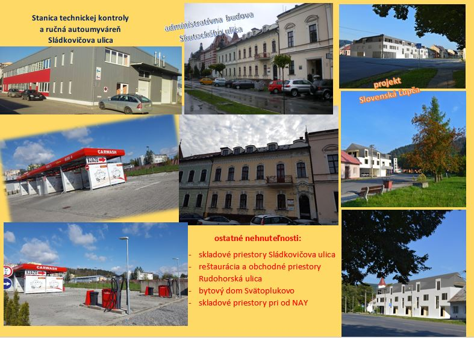

Sme spoločnosť, ktorej hlavným predmetom podnikania je výkon služieb pre motoristov - emisných a technických kontrol a kontrol originality. Tieto činnosti poskytujeme od roku 2005, takže naše pôsobenie v tejto oblasti na trhu je už dlhodobé a máme svoju stálu aj novú klientelu, ktorá sa k nám vracia vďaka kvalitne poskytovaným službám, slušnému jednaniu a zodpovednému prístupu. Vývojom, ktorým sme prešli pred rokom 2005, sme však nadobudli niekoľko nehnuteľností, o ktoré sa staráme, obnovujeme a vo väčšine prenajímame. Máme špedičné sklady aj administratívne budovy na území mesta Banská Bystrica, jeden bytový dom v Svätoplukove. Našu prevádzku STK, ktorá má dostatočné pozemky aj na iné využitie, sme už rozšírili o ručnú autoumyváreň, a v r.2018 plánujeme pristaviť polyfunkčnú budovu so službami pre zákazníkov - kaviarňou a bistrom, a časť určenou na ubytovanie. Toto nie sú všetky naše plánované aktivity. V r.2015 sme sa stali majiteľmi pozemku v Slovenskej Ľupči, ktorý leží na strategickom meste - takmer v centre obce. Je pekne situovaný, slnečný. Plánujeme na ňom v blízkej budúcnosti výstavbu bytového domu Centrum, kde budú 1-3 izbové byty a tiež obchodný priestor. Samozrejme s vlastným parkovaním. Stavba má moderný dizajn, prakticky rozložený priestor, účelne využitie všetkých ponúknutých možností. Na našej stránke sa bližšie môžete zoznámiť s rozlohou a polohou a s technickými údajmi týkajúcich sa jednotlivých priestorov. Tiež vizualizáciou a umiestnením na mape. Plánované dokončenie výstavby je v roku 2018.
Nevenujeme sa však len čisto podnikateľským aktivitám. V našej činnosti nájdete aj sponzoring rôznych podujatí. Venujeme sa hlavne športovej činnosti - podporovaniu mladých futbalových talentov, rozvoju mládežníckeho športu prostredníctvom Futbalovej školy Mareka Hamšíka, neodmietneme ani podporu charitatívnych alebo kultúrnych aktivít, kde častokrát jednorázovo alebo opakovane prispievame finančnými prostriedkami.
Vo všetkých našich aktivitách chceme aj naďalej pokračovať tak, aby boli prínosom pre ich adresátov - či sú to služby zákazníkom, prenájom alebo prípadna renovácia prenajatých priestorov, realizácia nových projektov a tiež podpora športových a kultúrnych podujatí nielen na území nášho mesta. O jednotlivých projektoch sa bližšie môžete dočítať v jednotlivých záložkách na našej web stránke www.donivostk.sk .

 Facebook
Facebook